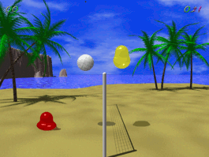
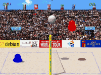

Blobby Volley 2
Dieser Artikel wurde für die folgenden Ubuntu-Versionen getestet:
Ubuntu 16.04 Xenial Xerus
Zum Verständnis dieses Artikels sind folgende Seiten hilfreich:
Blobby Volley 2  ist die Neuauflage des beliebten Volleyballspiels Blobby Volley. Es ermöglicht kurzweilige Spielchen gegen Bots (Computergegner) verschiedener Schwierigkeitsstufen, Spiele gegen menschliche Mitspieler am selben Rechner und Netzwerkspiele. Blobby Volley 2 steht in einer Betaversion für Linux, MacOSX und Windows zu Verfügung.
ist die Neuauflage des beliebten Volleyballspiels Blobby Volley. Es ermöglicht kurzweilige Spielchen gegen Bots (Computergegner) verschiedener Schwierigkeitsstufen, Spiele gegen menschliche Mitspieler am selben Rechner und Netzwerkspiele. Blobby Volley 2 steht in einer Betaversion für Linux, MacOSX und Windows zu Verfügung.
Installation aus Ubuntu-Quellen¶
Blobby Volley 2 kann mit dem folgenden Paket direkt aus den Paketquellen installiert werden:
blobby (universe)
 mit apturl
mit apturl
Paketliste zum Kopieren:
sudo apt-get install blobby
sudo aptitude install blobby
Manuelle Installation¶
Zunächst das aktuellste .deb-Paket von Sourceforge  herunterladen. Dieses (je nach Architektur aus dem 64- oder 32-Bit-Ordner) installieren [2].
herunterladen. Dieses (je nach Architektur aus dem 64- oder 32-Bit-Ordner) installieren [2].
Hinweis!
Fremdpakete können das System gefährden.

Konfiguration¶
Für den Komfort wird nun noch ein Eintrag im Startmenü angelegt [4]. Als Name sollte Blobby Volley 2 gewählt werden. Der Befehl zum Starten des Spiels lautet blobby. Das Spiel kann dann über den neu geschaffenen Menüeintrag oder alternativ auf den anderen üblichen Wegen [5] gestartet werden.
Steuerung¶
Jeder Spieler steuert sein gummiartiges virtuelles Ego mittels Tastatur, Maus oder Joystick. Die entsprechenden Einstellungen lassen sich im Spiel anpassen.
| Standard-Tastaturbelegung | ||
| Bewegung | Linker Spieler | Rechter Spieler |
| Links | A | ← |
| Rechts | D | → |
| Sprung | W | ↑ |
Netzwerkspiel¶
Im lokalen Netzwerk¶
Für ein Netzwerkspiel startet einer der beiden Spieler einen Server ("network Game" -> "host Game"). Der andere Mitspieler sucht dann dessen Spiel über die IP-Adresse des Servers ("network Game" -> "direct connect") oder sucht das Spiel im Netzwerk und wählt es dann in einer Liste aus ("network Game -> "scan for Servers").
Über das Internet¶
Blobby Volley 2 bietet auch die Möglichkeit über das Internet gegeneinander zu spielen. Dazu wählen beide Spieler in der Serverauswahlliste unter dem Menüpunkt "network game" einen Server aus.
Nützliche Einstellungen¶
Unter Options kann ein Spielername angegeben werden, der auch bei Netzwerkspielen angezeigt wird. Außerdem kann unter "Options -> Misc Options" festgelegt werden auf welcher Seite man bei Netzwerkspielen spielen möchte. Dabei ist es unwichtig welche Seite der Gegner gewählt hat, da die Bewegungen des Gegners auf die jeweils andere Seite umgerechnet werden.
Blobby Volley anpassen¶

Computergegner¶
Blobby Volley 2 hat schon eine Reihe von Bots von Haus aus integriert. Es ist aber auch möglich eigene Bots zu erstellen (Informationen hierzu sind in der Datei /usr/share/doc/blobby/Tutorial_de.txt zu finden). Die Dateien mit der Endung .lua werden dann in den Ordner .blobby/scripts des persönlichen Ordners kopiert und können künftig im Spiel über das Hauptmenü unter "Options" ausgewählt werden.
Hintergrund¶
Eigene Hintergrundbitmaps können in den Ordner .blobby/backgrounds des persönlichen Ordners eingefügt werden und über das Menü "Options -> Misc Options" ausgewählt werden.
Bei Bugs¶
Blobby Volley 2 befindet sich noch im Beta-Stadium. Auftretende Fehler können im Bugtracking-System des Projektes gemeldet werden.
- Erstellt mit Inyoka
-
 2004 – 2017 ubuntuusers.de • Einige Rechte vorbehalten
2004 – 2017 ubuntuusers.de • Einige Rechte vorbehalten
Lizenz • Kontakt • Datenschutz • Impressum • Serverstatus -
Serverhousing gespendet von